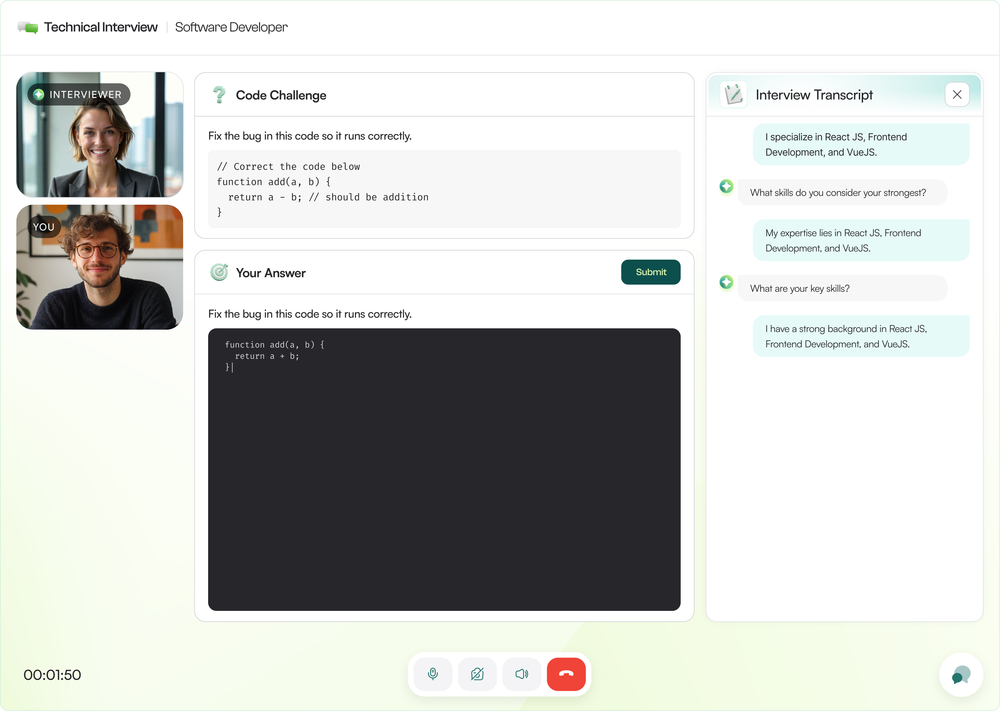

Smart Recruiter - Hiring, reimagined with AI.
A recruitment platform designed to reduce repetitive work for recruiters while creating a clear, guided experience for candidates.
"Hiring should feel simpler. AI should do the heavy lifting."
That was the direction that came out of our stakeholder discussions while working on Smart Recruiter. The platform had to support a complete hiring journey, from creating jobs and managing candidates to conducting interviews and evaluating them, without making the experience feel complex.
The challenge was finding the right places for AI to actually help. We discussed how AI could reduce repetitive work for recruiters, while still keeping them in control of important decisions.
That led us to focus on a few key areas: AI-powered job creation, AI interviews, and bringing interview insights together within the candidate profile so recruiters could review and compare candidates more easily.
On the candidate side, the focus was different: making the application and interview experience feel simple, clear, and guided.
When we started designing Smart Recruiter, the goal was simple: make the hiring process faster and easier with AI. But the recruitment journey involved several complex steps:
- Creating and setting up a job required manual effort.
- Recruiters had to manage candidates and interviews across different stages.
- Reviewing interview results and comparing candidates could become time-consuming.
- Candidates also needed a simple and guided experience from application to interview.
For recruiters, the process could feel time-consuming. For candidates, the experience needed to feel simple and clear. The challenge was finding the right places for AI to reduce effort without making the hiring experience more complicated.
Saumya Sinha - Talent Acquisition Specialist
- "Creating & managing candidates takes too much time."
- "I need an easier way to review interview results."
Aditya Singh - Software Engineer
- "The interview process should feel simple and guided."
- "I want to know what happens at each step."
Smart Recruiter had the potential to simplify hiring, but the process involved multiple complex workflows across job creation, candidate management, interviews, and evaluation. Recruiters needed to spend time on repetitive tasks, while candidates needed a more guided and straightforward experience.
- Hiring involves multiple users and stages, making consistency and simplicity critical.
- AI was a key part of the product, but it needed to solve real problems rather than add complexity.
- Making recruitment faster and easier for both recruiters and candidates was central to creating a better hiring experience.
Recruiters often spend time manually creating job descriptions and defining requirements. I introduced AI to help generate the initial job setup from basic inputs, while keeping the recruiter in control to review and edit the output.

The experience was designed to make AI feel like an assistant rather than another complex step in the workflow.

The interview experience needed to work for candidates without making AI feel intimidating. I designed a guided flow that prepares the candidate, checks their system, and clearly communicates what is happening before the interview begins.

The AI then conducts the interview while keeping the interaction focused and easy to follow.

After an interview, recruiters need to quickly understand how a candidate performed without going through information scattered across different stages. I brought the candidate's key information and interview evaluation together in one place.

This gives recruiters a clearer view of the candidate and makes it easier to review interview performance and make hiring decisions.

AI wasn't added everywhere. I focused on the moments where it could reduce repetitive work, guide users through complex tasks, and help recruiters make better decisions.
- Faster job creation → AI reduced repetitive work for recruiters.
- Simpler interviews → Candidates could complete AI-led interviews through a more guided experience.
- Better candidate evaluation → Interview insights were organized in one place, making candidates easier to review and compare.
- More connected hiring → Recruiters and candidates could move through the hiring journey within one platform.
This project taught me that AI design isn't about adding AI everywhere, it's about using it where it genuinely helps.
Working on Smart Recruiter helped me understand how to design AI experiences that feel useful without taking control away from the user. From AI-powered job creation to AI interviews and candidate evaluation, the focus was always on reducing effort and making complex processes easier.
It also taught me to think about both sides of a product, making the recruiter's work more efficient while keeping the candidate experience simple and guided. Most importantly, I learned that good AI design should feel helpful, clear, and natural, not intimidating.